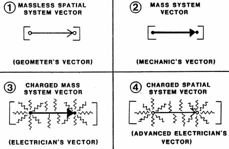

SLIDE 11.
THE FOUR VECTORS OF PHYSICS

| On
this slide we show a graphic illustration of each of these vectors. Note that they may be visualized as smeared particles, but the particle is not separate from the smear in time and length. Each vector must be considered as a unitary entity -- it is a special kind of quantum, if you will. Each is a special quantum of motion. And Dewey Larson has it right when he says, "All is motion." |